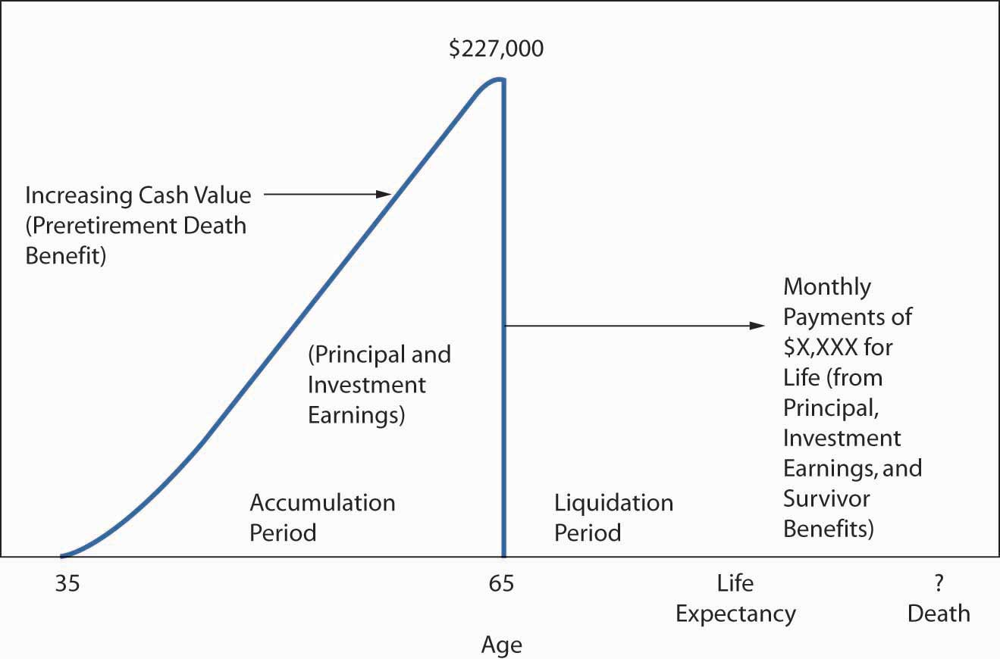

In this section we elaborate on the following key features of annuities:
The discussion of employer-provided pensions and IRAs in the previous section emphasized the importance of selecting the right investment vehicle for the individual. This is even prevalent as employers are opting to provide more enhanced 401(k) plans rather than the traditional defined benefits plans. Annuities, which offer features not available in any other investment products, are provided by insurance companies to help individuals accumulate funds for retirement. During preretirement years, annuities are primarily investment vehicles. During retirement years, the product provides a periodic payment that continues throughout a fixed period and/or for the duration of a life or lives. Although annuities are frequently used to save for retirement, their unique function is the scientific (actuarially computed) liquidation of a principal sum, usually during retirement years. During this period, they protect against the risk of outliving the financial resources invested earlier in the annuity. If the duration of payment from an annuity depends upon the expected length of a life or lives, the contract is known as a life annuityContract in which the duration of payment from an annuity depends upon the expected length of a life or lives..
The person or entity that purchases an annuity is the ownerThe person or entity that purchases an annuity.. The person on whose life expectancy payments are based is known as the annuitantThe person on whose life expectancy payments are based.. For annuities sold directly to individuals, the owner and annuitant are usually the same person. The beneficiaryThe person or entity who receives any death benefits due at the death of the annuitant. is the person or entity who receives any death benefits due at the death of the annuitant.
The time during which premiums are being paid and benefits (distribution) have not begun is called the accumulation periodThe time during which premiums are being paid toward an annuity and benefits (distribution) have not begun.. The value of the contract during this period consists of premiums plus investment earnings minus expenses and is called the accumulation valueThe value of the annuity contract during the accumulation period; consists of premiums plus investment earnings minus expenses.. The time during which the accumulation value and future investment returns are being liquidated by benefit payments is called the liquidation periodThe time during which the accumulation value and future investment returns of an annuity contract are being liquidated by benefit payments..
Annuities may be bought either on the installment plan or with a single premium. Most people use the installment plan. Usually, the owner chooses a flexible plan in which premiums may vary in amount and frequency. In the event the annuitant dies before benefit payments begin, deferred annuities sold to individuals promise to return the accumulation value at the time of death.
Deferred annuity on the installment plan is a savings program during the accumulation period. There is no protection (insurance) element involved—not any more than would be the case with monthly deposits in a savings account at the bank. The insurance or mortality element is only part of the distribution over the life of the annuitant. The payments are promised to last for the life of the annuitant even in cases of living longer than the life expectancy.
Annuities may be classified as either immediate or deferred, reflecting when benefit payments begin. An immediate annuityBegins payments at the next payment interval (e.g., month, quarter, or year) after purchase; requires a single premium. begins payments at the next payment interval (e.g., month, quarter, or year) after purchase. They require a single premium. A deferred annuityBegins payments sometime in the future as elected by the owner, such as at age sixty-five; may be funded by a single premium, equal installments, or, more commonly, by flexible premiums. begins payments sometime in the future as elected by the owner, such as at age sixty-five. Deferred annuities may be funded by a single premium; equal installments; or, more commonly, by flexible premiums.
During the accumulation period and the liquidation period, the annuity is classified as either a fixed-dollar annuity or a variable annuity. A fixed-dollar annuityEarns investment returns at rates guaranteed by the insurer, subject to periodic changes in the guaranteed rate for the next period; a set amount of benefit per dollar of accumulation (varying also by life expectancy when benefits begin) is paid during the liquidation period. earns investment returns at rates guaranteed by the insurer, subject to periodic changes in the guaranteed rate for the next period. A set amount of benefit per dollar of accumulation (varying also by life expectancy when benefits begin) is paid during the liquidation period. Variable annuityReturns vary with the investment performance of special investment accounts; the amount of benefit payment may vary from month to month or at another interval. returns vary with the investment performance of special investment accounts. The amount of benefit payment may vary from month to month or at another interval.
Generally, an annuity owner does not set a precise retirement income goal in advance. The retirement benefit is whatever amount has accumulated by retirement time. Further, the amount accumulated is a function of the amount of contributions, their timing, and the rates of investment return credited to the account over time. This concept is illustrated in Figure 21.3 "Hypothetical Values for the Flexible Premium, Deferred Annuity Concept". If the annuitant dies before beginning the annuity payments, the accumulation value is returned to the beneficiary. When the annuitant lives until the liquidation period and selects an income option based on the life expectancy of the annuitant alone, it is considered a single life annuityWhen the income option is based on the life expectancy of the annuitant alone, assuming the annuitant lives until the liquidation period..
Figure 21.3 Hypothetical Values for the Flexible Premium, Deferred Annuity Concept
The originally specified retirement date can be changed after the annuity is purchased. Upon retirement, there are several options for settlement, similar to the ones shown in Chapter 19 "Mortality Risk Management: Individual Life Insurance and Group Life Insurance" for life insurance proceeds:
The typical options include taking cash in a lump sum equal to the accumulation value of the contract. A fixed period annuityMakes payments for a specified period, such as twenty years, and then ceases. makes payments for a specified period, such as twenty years, and then ceases. A fixed amount annuityPays benefits of a set amount per period until the accumulation value at the time benefits begin plus investment earning during the liquidation period are exhausted. pays benefits of a set amount per period until the accumulation value at the time benefits begin plus investment earning during the liquidation period are exhausted. The amount paid under these three options is not influenced by anyone’s life expectancy.
As with whole life or universal life policies, there are mortality factors and investment return factors that are guaranteed. The mortality guarantee is in case a person lives longer than expected. Unlike a regular savings account, where the recipient of the money gets only the total amount in the account, in annuities, the payments are promised for the duration of the annuitant’s life. The insurance company is taking the risk of paying more to someone who lives longer than expected according to mortality tables. This is the mortality guarantee.
An annuity in which benefit payments are guaranteed for life but then cease and the premium is considered fully earned upon the death of the annuitant is known as a life annuity. In this case, no beneficiary will receive any more payments even if the annuitant dies very early. While this annuity pays the maximum periodic benefit per dollar accumulated at the time benefits begin (or per immediate single premium), far more common is the selection of a payment option that provides continuation of payments to beneficiaries for a certain amount of time, such as ten or twenty years following the death of the annuitant. Most people do not like the idea that they might die shortly after beginning to receive benefit payments from an annuity in which they have made a large investment. Therefore, insurers have made available refund annuities, period-certain life annuities, and annuities like joint-and-survivor that reflect the life expectancies of more than one person.
A temporary life annuityCombination of a fixed period annuity and a life annuity; payments stop at the end of a specified period or at the death of the annuitant, whichever comes first. is a combination of a fixed period annuity and a life annuity. Payments stop at the end of a specified period or at the death of the annuitant, whichever comes first. A period-certain optionGuarantees a minimum number of annuity payments whether the annuitant lives or dies. guarantees a minimum number of annuity payments whether the annuitant lives or dies. Thus, a person can purchase a life annuity with five years certain, ten years certain, or some other period certain. If the annuitant dies before the end of the specified period, payments continue to a beneficiary for at least the period specified. A cash payment may be available to the beneficiary equal to the present value of the remaining payments. If the annuitant lives through the period certain, payments continue until death.
A refund annuityGuarantees that the annuitant and/or beneficiary will receive, during the liquidation period, minimum payments equal to the single premium in an immediate annuity or the accumulation value in a deferred annuity. guarantees that the annuitant and/or beneficiary will receive, during the liquidation period, minimum payments equal to the single premium in an immediate annuity or the accumulation value in a deferred annuity. For example, assume an accumulation value of $250,000 at the time of annuitization and that the annuitant receives $100,000 before death. The beneficiary would receive a lump-sum payment of $150,000. The annuitant is also promised lifetime benefits. Consequently, benefits can far exceed the accumulation value of $250,000 at the time of annuitization plus future investment earnings on this amount. The annuitant pays for the refund feature by taking a reduced amount of periodic benefit compared to what he or she would receive for a life annuity. He or she would also pay for any other options to guarantee certain payments to beneficiaries are paid with a reduced amount of periodic payments.
With a joint annuityNames two annuitants and payments stop when the first joint annuitant dies., two people are named, and payments stop when the first joint annuitant dies. In contrast to the joint annuity, a joint-and-survivor annuityNames two annuitants and continues payments as long as at least one annuitant is alive. continues payments as long as at least one annuitant is alive. You may recall that the joint-and-survivor annuity is the mode required in pensions unless the spouse relinquishes this benefit. In annuities sold by insurers, husbands and wives are the typical users of the joint-and-survivor option. They can decide at the time of annuitization whether payments should continue at the same amount after one spouse dies or if the amount should be reduced (perhaps to one-half or two-thirds of the original amount). Some annuitants want the full refund guaranteed by the refund option, while others are satisfied with a period-certain guaranteed. Others select a joint or joint-and-survivor option because of concern for another person, possibly over their lifetime. The effect of such guarantees is to reduce the monthly installments that can be purchased with any given sum of money. The option selected depends on one’s situation and viewpoint.
Annuities commonly used to help fund retirement include the following:
All are available with fixed-dollar guarantees, as a variable or as index annuities.
The flexible premium deferred annuityAllows owners to change the amount of contributions, stop contributions, and resume them at will. allows you to change the amount of contributions, stop contributions, and resume them at will. For example, you may use a payroll deduction plan in which you authorize your employer to transfer $100 per pay period to the insurer. For a period of time, you may want to discontinue these contributions and later resume them at $200 per pay period. Without payroll deductions, you might prefer to submit premiums on a monthly, quarterly, annual, or some other basis. Earlier in the chapter, we referred to this as the installment plan.
For fixed-dollar annuities, the insurer guarantees a minimum rate of interest. Initially, a current rate of return is promised on funds in your account for a certain time (e.g., two years) during the accumulation period. Returns vary over time on your insurer’s investments that support fixed-dollar annuities, so the guarantee for future periods is likely to change. The degree of change may, in part, reflect the need for your insurer to remain competitive with annuity returns offered by other insurers, bank certificates of deposit, and other competing investment vehicles. Often, two or more interest guarantees are made by the insurer. One set of guarantees applies to funds contributed to the account in past periods. The other rate applies to funds contributed during a future period.
The single premium deferred annuityRequires payment of a single premium and a stipulates a longer period to which a current rate of interest is guaranteed. differs from a flexible premium deferred annuity primarily in the manner of premium payments. As the name implies, only one premium is paid. The motivation for purchase usually is driven more by the tax deferral of interest on earnings than by the promise of lifetime income during retirement. Another difference between the single premium deferred annuity and its flexible premium cousin is the longer period to which the current rate of interest is guaranteed
Many insurers have either a low or no sales load, which is basically a surrender charge (a percentage attached to withdrawals) that applies during the first five or more years. For example, 7 percent of the amount withdrawn can be retained by the insurer if the contract is surrendered for its cash value in the first year. The penalty decreases 1 percent per year, disappearing at the end of the seventh year. The surrender charge has two purposes. First, it discourages withdrawals. Second, it allows the insurer to recover some of its costs if the contract is terminated early.
The agent or broker may receive a normal level of sales commission on no-load and low-load annuities, but the commission is not deducted directly from the contributions. Annual expense charges levied on all assets are usually around 2 percent. Part of this charge is used to pay marketing expenses.
The single premium immediate annuityBegins benefit payments to the annuitant on the next payment date following the premium payment, usually as a large sum. is best understood by emphasizing the word immediate. Benefit payments to the annuitant begin on the next payment date following the premium payment, usually a large sum. The primary purchase motive would typically be interest in lifetime income. A primary source of funds for these annuities is lump-sum distributions from corporate retirement plans, as discussed in the next section. Other sources of funds include various forms of personal investment and life insurance death benefits.
Another use of annuities arises out of legal liability judgments. Liability insurers are increasingly interested in making periodic payments to the plaintiff, to lower the total cost of the liability. A structured settlement annuityMakes periodic payments to a plaintiff in a legal liability judgment to lower the total cost of liability. is a special type of single premium immediate annuity that achieves the goal. Issued by a life insurer, its terms are negotiated by the plaintiff, the defendant, their attorneys, and a structured settlement specialist. The market for structured settlement annuities is highly competitive. Consequently, the successful insurer in this market is likely to have a high rating for financial soundness, a competitive assumed rate of investment return, and a mortality assumption that reflects the plaintiff’s life expectancy.
Variable annuities are more complicated than fixed-dollar annuities and are similar in concept to variable life insurance, which is discussed in Chapter 19 "Mortality Risk Management: Individual Life Insurance and Group Life Insurance". They are available as single premium annuity or immediate or deferred annuities.
In the variable annuity, two types of units are employed: accumulation units and annuity units. Some accounts invest primarily in variable-dollar assets such as common stocks and real estate. Investments are made in accounts that are kept separate from the insurers’ general funds. These are called separate accounts in the insurer’s annual statement, and their significance will be covered in the next section. The value of each unit varies with the current market value of the underlying investments in the portfolio.
As premiums are paid, the account is credited with a number of accumulation unitsCredits variable annuity accounts when premiums are paid, as determined by the amount of premium and current market value., the number to be determined by (1) the amount of premium and (2) the current market value of an accumulation unit. For example, if the monthly premium after expenses is $50 and the current value of a unit is $10, the account is credited with five units. If the current value of a unit has changed to $9.52, the account is credited with 5.25 units. The surrender value, or maximum withdrawal, at a specific point in the accumulation period is:
This same calculation determines the death benefit received by the beneficiary in case of the annuitant’s death during the accumulation period.
During the liquidation or distribution period, annuity unitsExchanged for accumulation units during an annuity’s liquidation or distribution period, as determined by current market value, assumed investment return, and key features of the annuitant. are exchanged for accumulation units. The determinants of the dollar income are (1) the current market value of each unit; (2) an assumed investment return, such as 4 percent; and (3) the number of units considering the age, gender, and settlement option of the annuitant. Because women live longer, gender is important in determining the periodic amount paid. Women of the same age as men will receive a smaller periodic payment for an equal accumulated account. If the investments perform better than the assumed return, the income will be greater. Many variable annuities offer a choice of investment mediums. The choices are similar to those for a family of mutual funds. In fact, some variable annuities are funded by a family of mutual funds rather than by separate accounts maintained by the insurer. For example, your variable annuity might offer the following separate accounts:
The funds can be divided among two or more accounts in a manner that reflects your personal risk propensity.
A special type of variable annuity providing a guaranteed minimum withdrawal benefit (GMWB) has become problematic for annuity companies throughout the 2008–2009 recession. GMWB annuities promise fixed minimum income benefits, and they are attractive to consumers because of their expected provision for growth of future benefits based on positive investment returns (as mentioned above). However, with upfront investments in stocks, real estate, and mutual funds rapidly eroding—or performing poorly due to low interest rates—over the course of the 2008–2009 recession, companies are struggling to provide even the minimum guaranteed withdrawal rate to holders of GMWB annuities. The opportunity for growth of future income streams, therefore, seems a far-off prospect to annuitants.
As a hedge against the falling value of GMWB annuities, insurers are required to increase their reserves to assure customers of solvency. Consequently, more liability must be added to companies’ books (which may also be contaminated by bad debt taken on during the credit crisis), forcing them to draw upon and deplete working capital as a recourse. This was one of the reasons that the three major rating agencies downgraded numerous life and annuity companies in late 2008 and early 2009 (see the box, “The Life/Health Industry in the Economic Recession of 2008–2009” in Chapter 19 "Mortality Risk Management: Individual Life Insurance and Group Life Insurance"). The industry has petitioned the National Association of Insurance Commissioners (NAIC) to lower reserve requirements, a request already denied once. Even if the NAIC does revise its position on reserves, the effect would be only a superficial appearance of improved net worth. The rating agencies typically do not modify ratings in response to accounting changes. Therefore, the future solvency of carriers offering GMWB annuities remains an important concern to both the industry and consumers.
Equity indexed annuities are annuities with returns linked to the S&P 500, with guarantees of investment or to some fixed interest rate indexes. Some index annuities have several so-called buckets of investment mixes, including one that has a fixed interest rate. The appeal of these annuities is the opportunity to earn more returns yet retain the minimum guarantees.
The first major tax question is, Can individuals deduct annuity contributions (premiums) from adjusted gross income each year? Generally, premiums are not deductible. The exception is when annuities are invested in any of the pension plans described in this chapter.
When an annuity is purchased separately from any pension plan by individuals, the premiums paid are from after-tax income. During the accumulation period with these annuities, no income taxes are due on the returns unless the annuitant is making withdrawals or surrenders. When the annuity is distributed to the annuitant, only the earnings (not the premiums) are subject to income tax. When annuities are used as investment instruments in pensions or in IRAs, they are considered tax-deferred annuities. The premiums are paid with before-tax income. Distributions from tax-deferred annuities are subject to income taxation on the whole account. All payments from a tax-deferred annuity are subject to ordinary income taxes during the liquidation period.
For annuities that are bought with after-tax money by individuals, ordinary income taxes are paid on the return of (previously untaxed) investment earnings. The amount of each payment returned during the distribution of the annuity represents previously taxed contributions. These are not taxed again. Therefore, each payment is divided between taxable and nontaxable amounts at the beginning of the payout period by calculating an exclusion ratioExpression of annuity payments during distribution as taxable and nontaxable portions and calculated as investment in contract divided by expected return.. The ratio is then multiplied by each periodic payment to determine the amount of each annuity payment that is excluded from gross income. The exclusion ratio is the following:
In this section you studied different types of annuities, which are retirement investment and distribution vehicles:
Meg Cohen is about to turn sixty-five and retire from her job as a school librarian. When she retires, she will receive a lump-sum pension disbursement of $320,000. She plans to place the money in an annuity, but she is having trouble deciding among three different annuity options:
What are the advantages and disadvantages of each option?